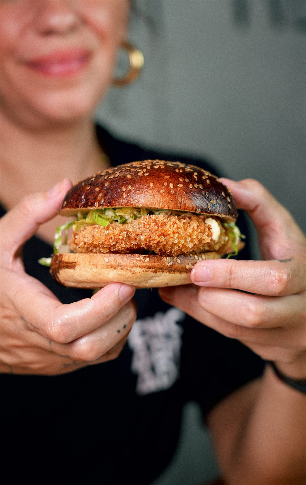
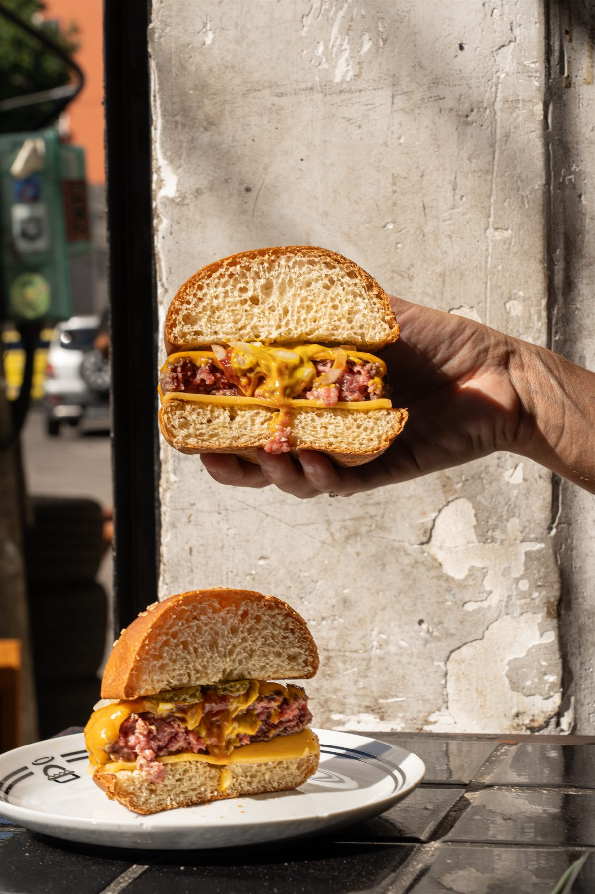
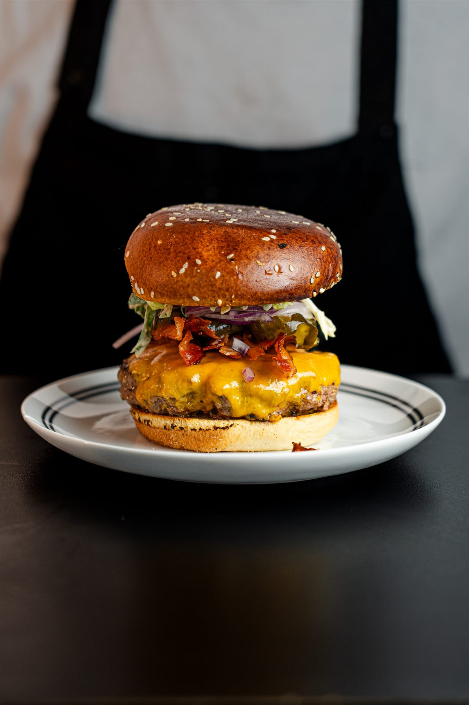

Sobre nós
Feito para sujar as mãos.
O Encarnado Burger nasce da vontade simples de servir burgers com presença: pão macio, carne suculenta, queijo derretido e molho no ponto certo.
No Bolhão, o Encarnado Burger junta uma localização central com uma experiência simples: pedir, sentar, comer bem e voltar.
Galeria



Informações
Rua do Bolhão, no coração da baixa do Porto.
Uma localização central, fácil de encontrar e alinhada com o ritmo da cidade.
No centro do Porto, a poucos passos do Bolhão.
Encontra-nos facilmente na baixa do Porto e abre a rota diretamente no Google Maps.
Abrir mapaBourgeois Flavors Unipessoal Lda
519 234 138
Rua do Bolhão 37, 4000-112, Porto
Segunda a Domingo, 12:00 - 23:00
251 115 053
@encarnadoburger.pt
geral@encarnado.pt
privacidade@encarnado.pt